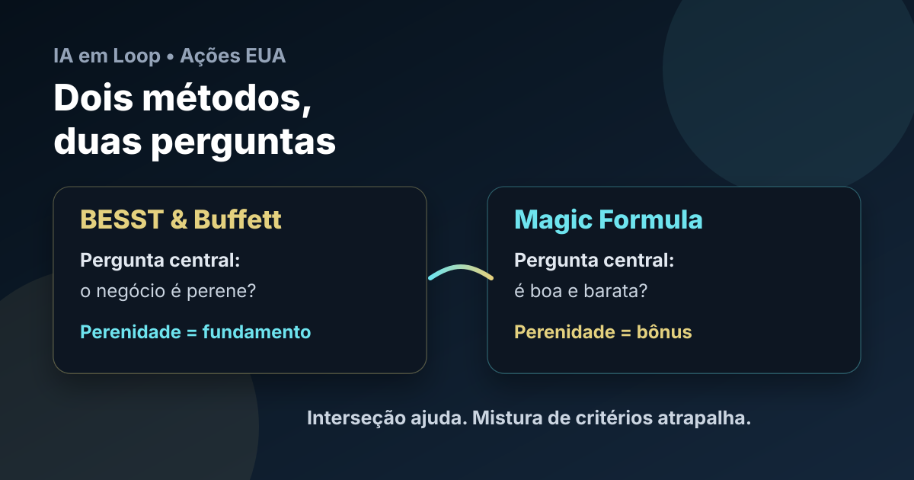

BESST & Buffett e Magic Formula: dois métodos, duas perguntas
Ao levar os rankings do IA em Loop para ações americanas, a primeira regra é não transformar métodos diferentes em uma salada. BESST & Buffett e Magic Formula podem coincidir em alguns nomes, mas cada um responde a uma pergunta própria.

Leitura visual: B&B começa pela perenidade do negócio; Magic Formula começa por retorno sobre capital e preço. A interseção é útil, mas não substitui nenhum dos dois métodos.
Regra simples: no BESST & Buffett, perenidade é fundamento. Na Magic Formula, perenidade é bônus. Essa frase evita boa parte dos erros ao construir uma carteira EUA.
Duas perguntas diferentes
O BESST & Buffett começa com uma pergunta qualitativa: este negócio tende a continuar relevante por décadas? Antes de preço, dividendos ou múltiplos, vem a perenidade do setor e do modelo de negócio.
A Magic Formula começa em outro lugar: esta empresa combina retorno sobre capital alto com preço baixo o suficiente para entrar em uma carteira diversificada? É um método quantitativo, criado para funcionar no conjunto, não para transformar cada ação em uma tese de longo prazo individual.
As duas abordagens podem cruzar em empresas como Adobe, Zoetis, Bristol-Myers ou Gen Digital. Mas a coincidência não autoriza misturar os critérios. Quando uma ação entra na carteira, precisa ficar claro se ela entrou por perenidade e qualidade, ou por estatística de qualidade/preço.
No B&B, perenidade vem antes do preço
No BESST & Buffett, uma empresa barata em um negócio frágil continua sendo uma empresa frágil. Preço baixo não compensa falta de perenidade. O método procura negócios que tenham chance de atravessar décadas: saúde, pagamentos, software recorrente, dados financeiros, consumo defensivo, plataformas dominantes, seguros bem precificados e serviços essenciais.
Isso não quer dizer excluir energia, mineração ou imóveis como se fossem irrelevantes. Pelo contrário: energia, metais e ativos reais são essenciais. O ponto é que muitos desses lucros são cíclicos e exigem outra régua.
Perenes compounders
Negócios com demanda durável, margem resiliente, reinvestimento rentável e menor dependência de preço externo. É o núcleo natural do B&B.
Perenes cíclicos
Energia, mineração, fertilizantes e indústria pesada podem ser perenes, mas precisam de lucro normalizado no ciclo. Múltiplo baixo no lucro de pico engana.
Real assets e REITs
Imóveis podem ser perenes, mas não devem ser analisados por lucro contábil simples. FFO, AFFO, ocupação, dívida e juros importam mais.
Casos fora do B&B
Negócios dependentes de moda, subsídio, ciclo curto ou vantagem fraca podem até ficar baratos, mas não viram tese B&B só por pontuação.
Na Magic Formula, perenidade é apenas um plus
A Magic Formula não pergunta primeiro se a empresa é uma compounder para décadas. Ela procura empresas boas e baratas dentro de um universo amplo. A página oficial do método descreve uma carteira com ações listadas nos EUA, diversificação de pelo menos 20 nomes, preferência por empresas maiores para reduzir volatilidade, pesos iguais e manutenção aproximada de um ano.
Por isso, uma mineradora, uma empresa de energia ou uma varejista cíclica pode aparecer bem na Magic Formula. Isso não significa que ela virou B&B. Significa apenas que, naquele recorte, a relação entre retorno sobre capital e preço ficou atraente para uma cesta quantitativa.
Ranking EUA: 10 empresas por método
Para este primeiro recorte público, o ranking abaixo usa o universo exploratório de ações americanas já triado pelo IA em Loop. A lista é uma fotografia metodológica, não uma ordem de compra automática. No B&B, os nomes foram lidos pela perenidade do negócio. Na Magic Formula, a ordem segue o sinal quantitativo de qualidade/preço.
Top 10 BESST & Buffett EUA
| # | Ticker | Empresa | Setor | Leitura |
|---|---|---|---|---|
| 1 | TROW | T. Rowe Price | Gestão de ativos | Perenidade financeira, mas sensível a ciclo de mercado |
| 2 | ADBE | Adobe | Software | Software recorrente, marca forte e margem alta |
| 3 | ALL | Allstate | Seguros | Seguro é perene; underwriting e ciclo de sinistro exigem disciplina |
| 4 | PTC | PTC | Software industrial | Software B2B ligado a engenharia e indústria |
| 5 | ACGL | Arch Capital | Seguros/resseguros | Negócio perene, mas exposto a ciclo de preços e catástrofes |
| 6 | GILD | Gilead | Saúde | Healthcare defensivo, caixa e pipeline importam |
| 7 | INCY | Incyte | Biotecnologia | Saúde perene, mas risco de concentração/pipeline |
| 8 | RMD | ResMed | Medtech | Demanda estrutural em sono e saúde respiratória |
| 9 | GEN | Gen Digital | Cibersegurança | Proteção digital recorrente; observar crescimento orgânico |
| 10 | PGR | Progressive | Seguros | Auto insurance perene, com execução de precificação |
Top 10 Magic Formula EUA
| # | Ticker | Empresa | Setor | Leitura |
|---|---|---|---|---|
| 1 | LULU | Lululemon | Consumo cíclico | Alto retorno, mas perenidade é bônus, não filtro |
| 2 | NEM | Newmont | Mineração | Commodity pode entrar pela estatística, com risco de ciclo |
| 3 | DECK | Deckers | Consumo cíclico | Marca forte; risco de moda e ciclo de consumo |
| 4 | ZTS | Zoetis | Saúde animal | Aqui há sobreposição boa: qualidade + perenidade |
| 5 | APA | APA Corp. | Energia | Barata/retorno pelo ciclo; não confundir com compounder |
| 6 | CF | CF Industries | Fertilizantes | Setor essencial e cíclico; lucro normalizado importa |
| 7 | ADBE | Adobe | Software | Sobreposição positiva entre qualidade e preço |
| 8 | BMY | Bristol-Myers Squibb | Saúde | Defensiva, mas depende de pipeline e patentes |
| 9 | GEN | Gen Digital | Cibersegurança | Preço/retorno interessante; checar crescimento |
| 10 | EXE | Expand Energy | Energia | Caso estatístico de energia, não tese B&B automática |
O que a interseção realmente significa
Quando uma empresa aparece bem nos dois métodos, o sinal merece atenção. Mas a interseção é apenas uma informação adicional. Ela não substitui a análise do B&B nem a disciplina quantitativa da Magic Formula.
- ADBE combina software recorrente, margem alta e bom sinal de qualidade/preço.
- ZTS une saúde animal, demanda estrutural e forte retorno sobre capital.
- BMY traz defesa setorial, mas exige leitura de pipeline e vencimento de patentes.
- GEN parece interessante pelo preço, mas precisa provar crescimento e qualidade de receita.
Esses casos são bons candidatos para dossiês individuais. Já nomes como Newmont, APA, CF e Expand Energy podem funcionar na Magic Formula, mas entram com outra natureza: são cíclicos/commodities. Se forem analisados no B&B, precisam de régua de ciclo, não de régua de software.
Como isso vira carteira
A consequência prática é separar as carteiras desde o nascimento. A carteira B&B pode ser mais concentrada, porque a tese depende de perenidade e qualidade. A carteira Magic Formula deve ser mais diversificada, porque o método depende do conjunto estatístico.
O erro seria pegar as 10 ações mais bonitas de uma lista híbrida e chamar isso de método. O correto é saber qual pergunta colocou cada ação na lista. A clareza do método vale mais do que parecer sofisticado.
Conclusão
A expansão para ações americanas não começa com “qual é a melhor ação?”. Começa com: qual método está selecionando essa ação?
Se for BESST & Buffett, perenidade é o primeiro filtro. Se for Magic Formula, retorno sobre capital e preço comandam a seleção, com perenidade como bônus. Quando os dois concordam, ótimo. Quando discordam, a carteira precisa respeitar a origem da tese.
Essa separação torna o ranking mais honesto, mais auditável e mais útil para acompanhar carteiras reais ao longo do tempo.